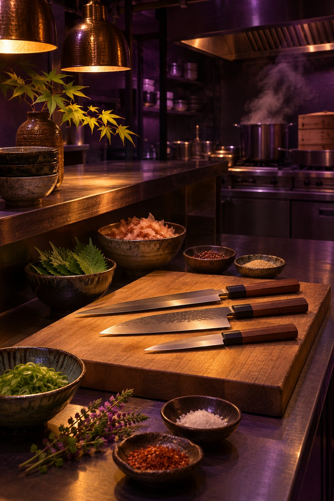

Nuestra historia
Nosotros
Una cocina de fuego vivo y una mesa pensada para compartir.
Del wok a la robata
WOOK nació en Madrid de la idea de reunir en una misma mesa el wok a fuego vivo y la robata japonesa. El menú sigue el ritmo de una cena compartida: unos bocados al vapor, platos de la brasa y algo fresco para terminar.
Nuestra filosofía
Cocinamos con el calor justo para cada ingrediente y ajustamos el plato con fondos, encurtidos y fermentos hechos en casa.

Chef ejecutiva
Mika Sato
Mika Sato aprendió a cocinar en la barra de su familia y pulió su oficio entre Tokio y Madrid. Su carta combina técnicas japonesas y chinas con producto de temporada.

El espacio
A la luz de la brasa
Banquetas de terciopelo, luz ámbar y una cocina a la vista. La barra de nogal sirve toda la carta de cócteles.
Visítanos
Dónde y cuándo
- Lunes
- Cerrado
- Mar–jue
- 13:00–16:00 · 19:30–23:30
- Vie–sáb
- 13:00–16:00 · 19:30–00:30
- Domingo
- 13:00–17:00
+34 910 000 018
hola@wook.example
Prensa y reconocimientos
Selección de cocina de autor · Guía Brasa, 2026. Recomendación editorial · Revista Sobremesa Urbana, 2025.
Menciones ficticias de este proyecto de portafolio.